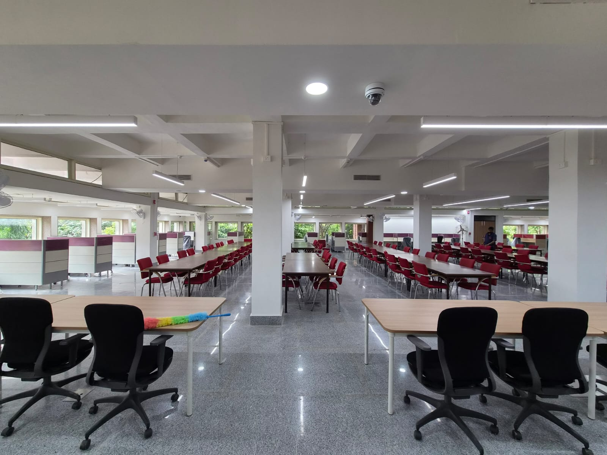
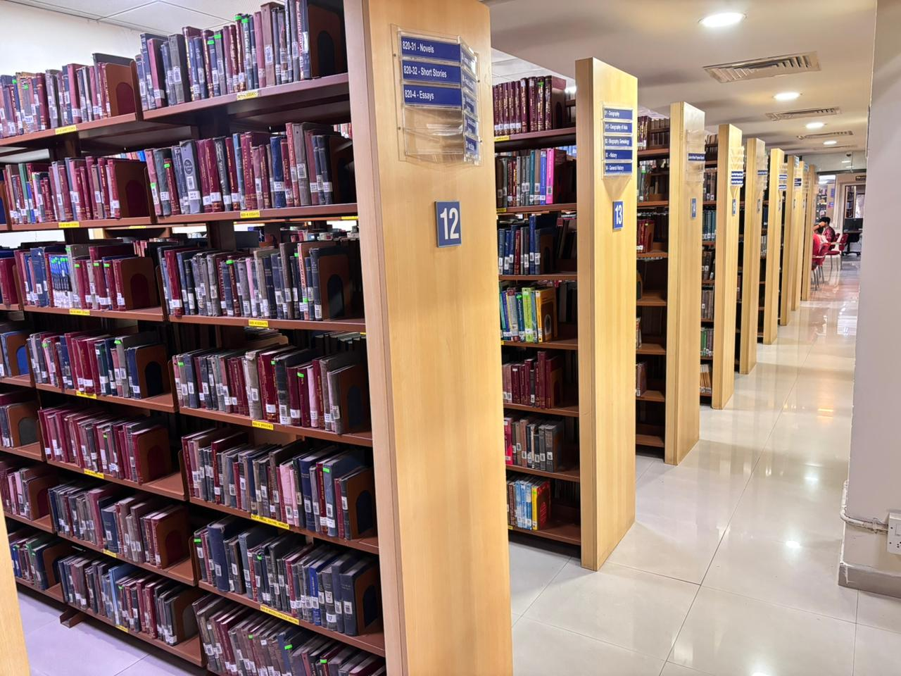
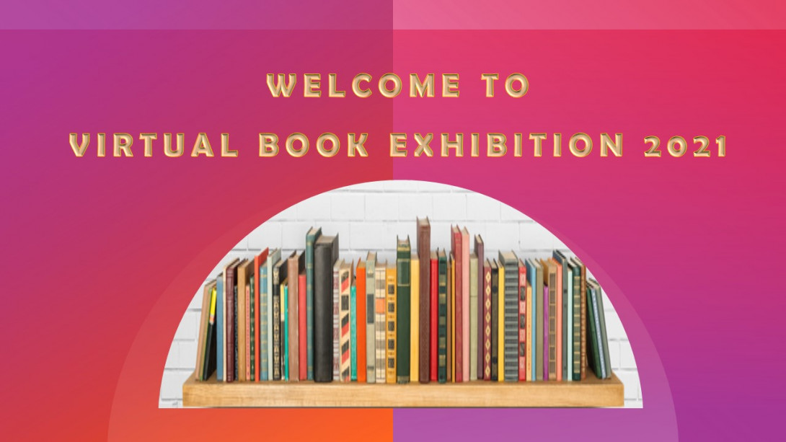
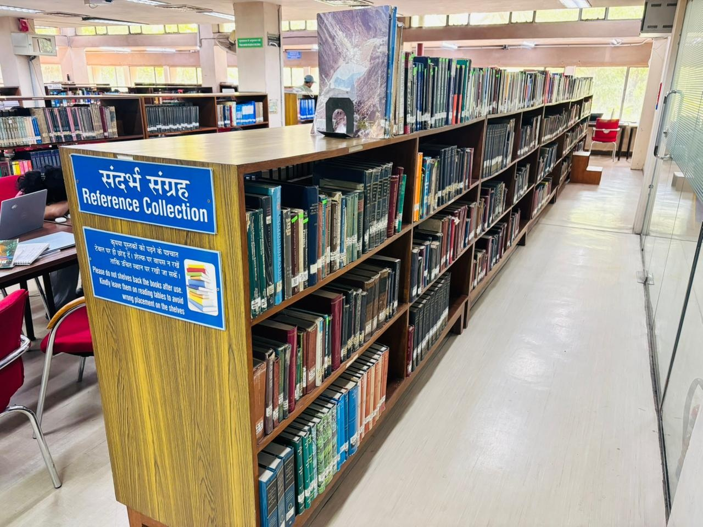
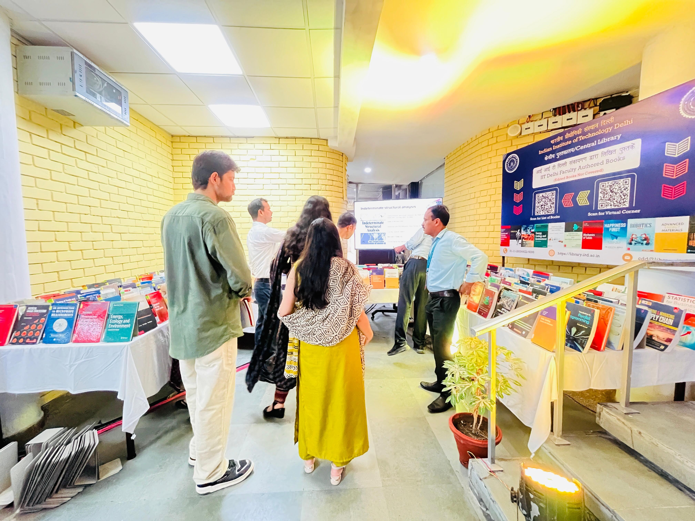

STUDY SPACES
Reading and study spaces
Quiet reading areas and shared study spaces support focused work and collaborative learning.
The Central Library supports individual study, group learning and research discovery. Collections and services include print materials, reference resources, faculty-authored works, digital access and research support. Use current library guidance for hours, borrowing rules and off-campus access.

Quiet reading areas and shared study spaces support focused work and collaborative learning.

Print collections provide textbooks, reference works and subject material for coursework and research.

Displays and library events help readers discover collections, research outputs and new resources.

Reference resources help readers locate background material, standards and subject-specific information for academic work.

Showcasing books by institute faculty makes local scholarship visible to students and campus readers.
Images in this guide are saved with the site. Library services, access rules and hours may change; confirm current arrangements before visiting.